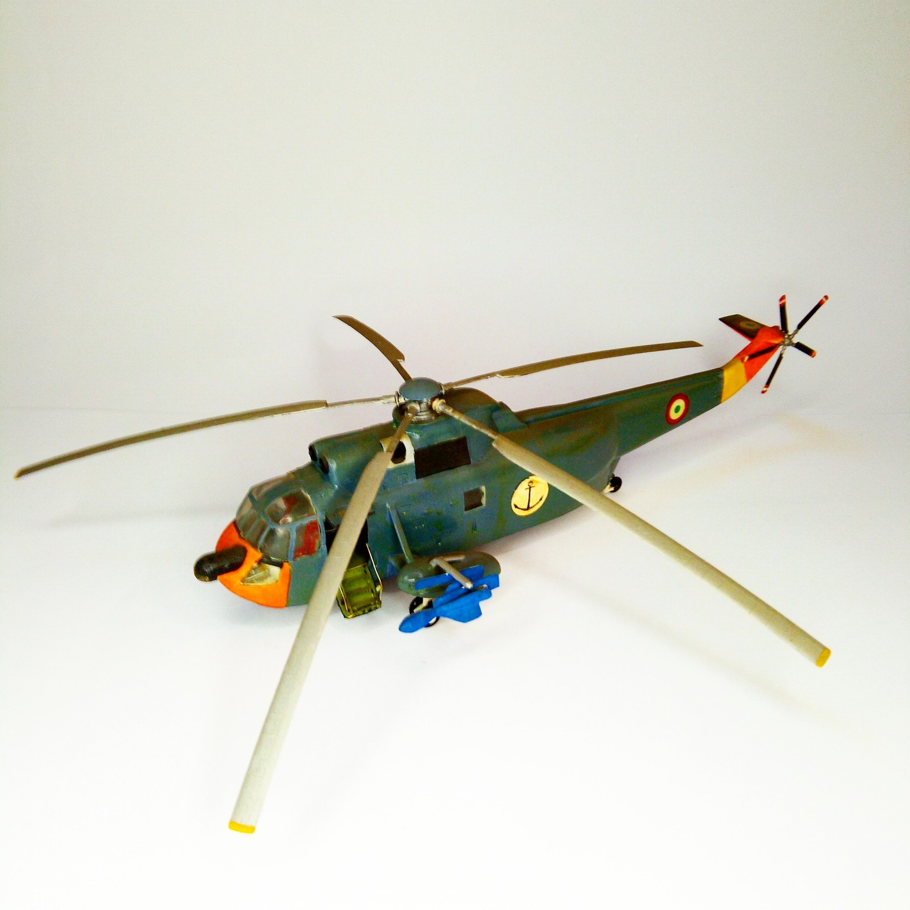

Aerei · scale model archive
Sikorsky SH-3D Sea King
Sikorsky SH-3D Sea King — Kit: conversion from Airfix, Scale: 1/72. Conversion to represent an Italian Marina Militare helicopter, including Marte…

Photo gallery
English description
Conversion to represent an Italian Marina Militare helicopter, including Marte missile with launcher and decals, use of Humbrol day-glo orange special paint
#1/72 #conversion
Descrizione italiana
Conversione una represent una Italian Marina Militare elicottero, including Marte missile con launcher e decals, use di Humbrol arancione fluorescente vernice speciale.